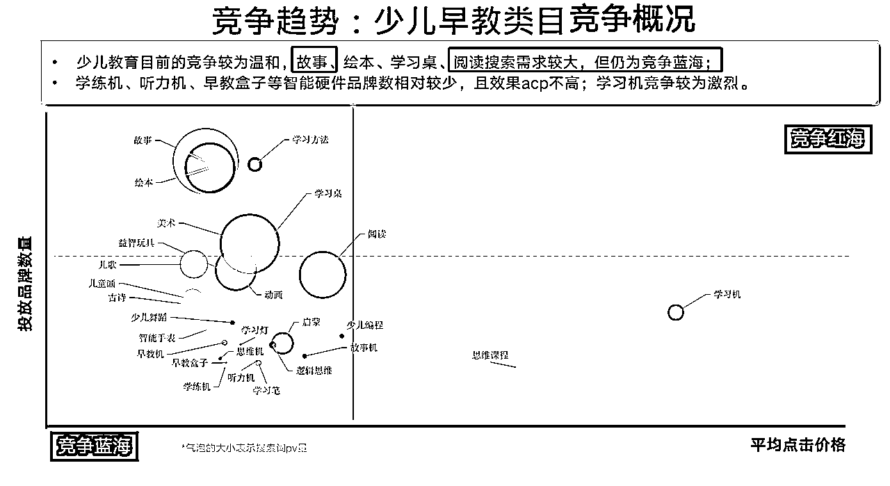
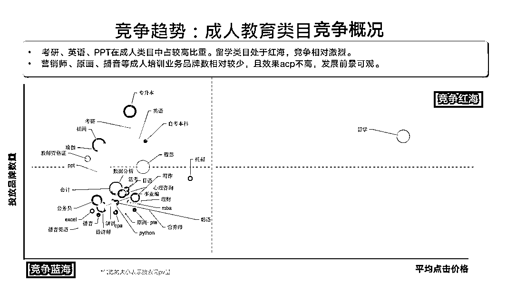
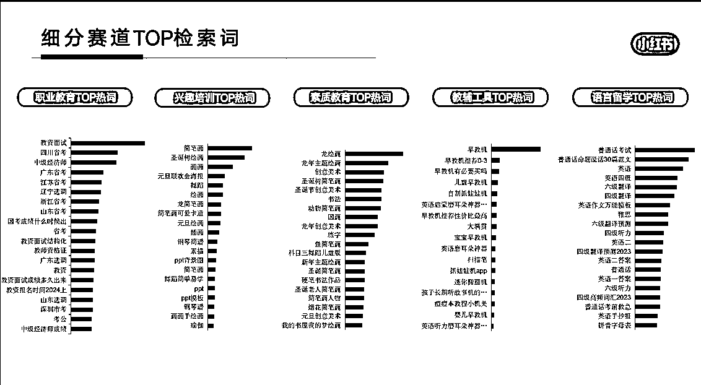
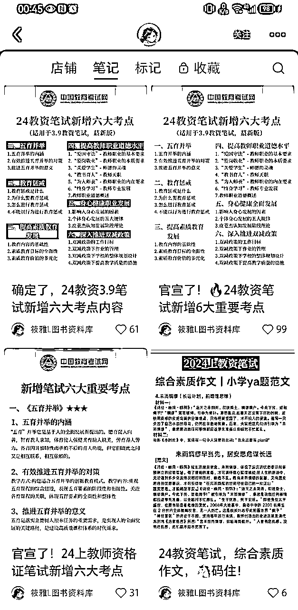
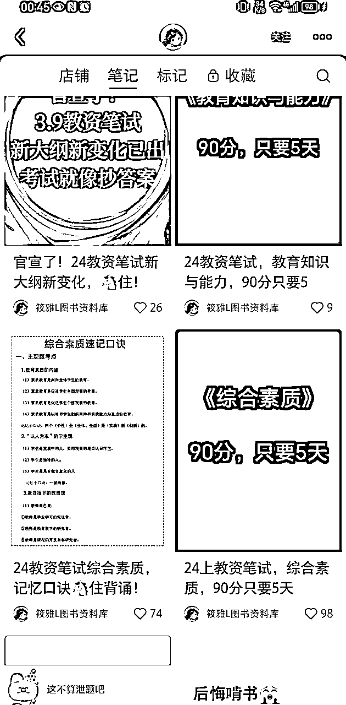
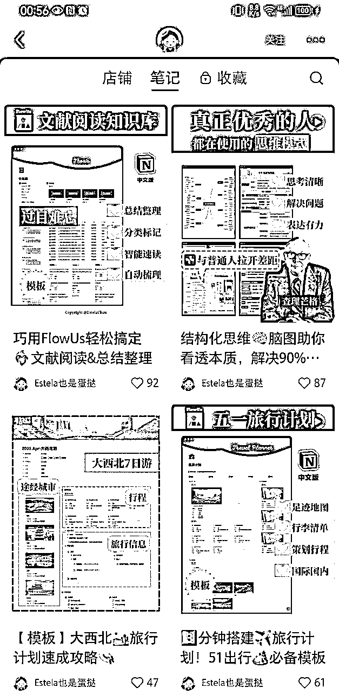
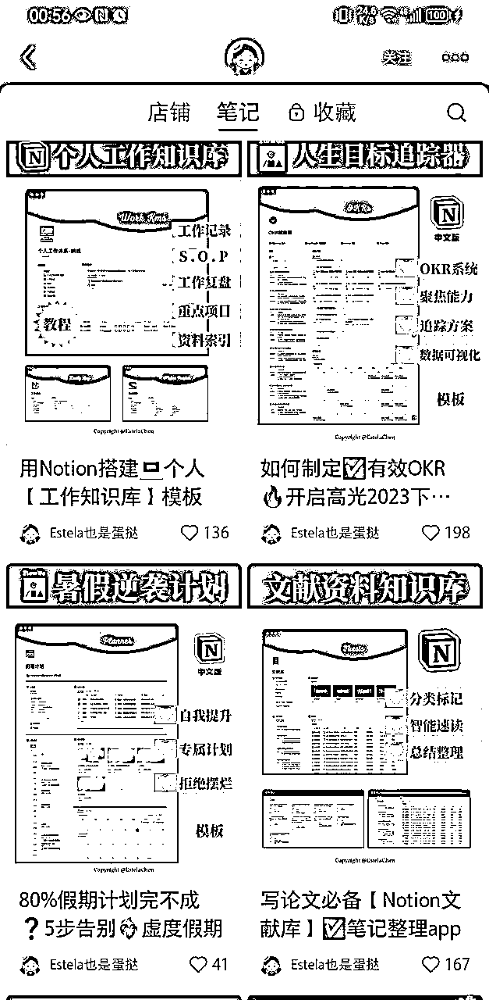

来源：https://shcnj4ihyr.feishu.cn/docx/EO9ndwGWQoELJKx6rAwczRcHnud
通过在公域平台发布虚拟资料，最后引流到私域进行变现。
以往的平台只局限于淘宝、拼多多这类传统大型电商平台，之前也有人在闲鱼上售卖虚拟资料，但因为盗版资料横行，闲鱼官方也禁止售卖虚拟资料。而在2023年小红书准备大力发展小红书店铺后，看到商机的聪明人早早就冲了进去，卖各种资料赚得盆满钵满。
卖教育资料其实是很好的赛道，一方面是因为尽管教培被禁止，但家长对于子女“望子成龙望女成凤”的心并没有被打压，所以他们会想着法子给子女找培训辅导的资料和课程；另一方面经济大环境不好，很多公司都在裁员，职员为了自保会考公考编或者提升技能、升学等来增强自己对多变环境的适应能力。
综上，只要人们对未来环境变化充满“未知的焦虑感”，那么教育赛道上的资料整理就会一直有需求。
基于此，我大致将当前小红书上比较火的资料整理赛道分成了以下定位，该分类迁移到抖音也是通用的。
同时，建议大家多看看小红书官方发布的行业月报，不知道哪个赛道还不卷的话，官方会告诉你答案。
以下是我截图23年12月行业月报的内容，可以看出在少儿教育类目里，仅以资料整理的维度来看的话，故事和阅读搜索需求大且为竞争蓝海；营销师、原画、播音等成人培训业务的acp不高，尚处于竞争蓝海。


还是小红书官方的月报，当月细分赛道有哪些热词，官方都给你整理好了。
光是免费流量的关键词，就已经分为5个类目：职业教育、兴趣培训、素质教育、教辅工具、语言留学。

虚拟产品好就好在门槛低，门槛低的原因之一就是“好抄袭”，所以多去看同行，总能找到货源。
1、平台类，知乎、小红书上，直接搜索关键词，会有各种资料的账号，关注，加好友，挖掘资料源头
2、公众号:直接搜索目标资料，比如小学语文、小学数学等，先大量关注，做大基数，再进行筛选
3、q群: 直接搜索关键词，会有各种资源群，里面也有很多同行
4、多搜集同行，筛选出持续更新的靠谱的同行，根据文件质量分类，列成表格，后面作为资料更新基本盘
5、电商平台。比如淘宝还有拼多多。不过拼多多能买到的多半淘宝上也能买到，所以要多对比几家才能避免买到重复的，并且没成交之前不要先囤货，如果有已经成交的商品再去同行那里下单也可以。
需要注意的是，从同行挖资源的时候要注意版权问题。如果是机构的虚拟资料，直接不用；个人类的或者弱版权的酌情删除水印；毫无版权限制的直接大胆开卖。
资料整理主要是虚拟产品赛道，后面的分析我将主要以小红书店铺为主要平台，除去缴纳保证金1000元（其实保证金只有在提现的时候再交钱也可以）、以及从同行购买资料（以最高10元/份计算） ，几乎可以算是0成本。假设一份资料从淘宝获得的原价是5元，在小红书上售卖的价格是9.9，利润率98%，销量以1000来算，纯利润也有4900。
而今年开始，小红书开始重抓商业化、严格限制交易导流行为，想要把账号长期做下去，未来势必会面临付费投流的情况。算上企业号认证成本是600、私信通1个月最少要消耗1000元来算，导流到站外进行交易显然是更不划算的。
因此，如果做资料整理要放大利润，根据公式GMV = 流量 x 点击率 x 转化率 x 客单价 x 复购率，有以下两种选择：
1、站内：矩阵店铺，每个单号每天发多个笔记，提升爆款出现的概率（流量↑，点击率↑）；尽量找足够低的同行产品进行购买，打包成一个资料集合，提升利润（客单价↑）；产品多上新，多采购不同类型的产品，让用户在你的小红书店铺获得满足感（复购率↑）
2、站外：以企业号认证3个账号为基准，单号配合多发笔记（流量↑，点击率↑）。站内使用小红书店铺卖资料，站外引导用户加微信领取课程。再通过私域内运营朋友圈（转化率↑），以独立开发课程为高客单价产品，引导用户低转高，实现高利润（客单价↑，复购率↑）。
账号名称：筱雅L图书资料库
粉丝数：3599
账号类型：企业号
变现方式：
a.小红书店铺售卖幼儿园、中学、小学等不同阶段的教资资料，价格5.9-9.9不等，产品销量200-3000不等。
b.小红书店铺售卖教资招聘资料包网课，价格20元，目前尚未出单。
内容形式：笔记发布的内容，主要是考点、考纲变化等，封面直接晒出资料的缩略图搭配6-9张图，显示资料之多。不过整体封面不统一，经常有变化，略影响主页美观度。


账号名称：Estela也是蛋挞
粉丝数：2.7万
账号类型：个人号
变现方式：
以下模板类的资料，可能是博主从外网下载模板后修改再售卖，也有可能是自创自用的模板直接售卖，加上这是纯个人号，后面分析发现店铺不止卖资料，还售卖知识付费产品，利润率直接翻倍。
a.小红书店铺notion个人工作知识库，包括论文个人知识管理库、英语学习管理库等，价格从15-39.9元不等，销量从90-200不等。
b.小红书店铺售卖多合一知识管理系统，价格128，销量53。
c.售卖笔记会员，价格359，销量0，不知道是不是另外在私域完成成交了。
内容分析：这个博主表面上是卖notion模板，其实内核也是在贩卖生活和梦想——教你怎么规划工作、怎么打理自己的生活、怎么用一个软件规划自己的人生井井有条。所以兜售notion模板，是想要做成长赛道但又苦于变现的小伙伴非常适合的参考模式。


资料整理对于还没有项目/刚入门网赚领域的人来说，确实是不错的领域，上手快、只需要拼执行力就能做。
但这种无门槛的赛道太卷，想要长期做下去，要么积累用户到自己的私域去复购更高客单价的产品，要么比拼店群模式扩大利润率。